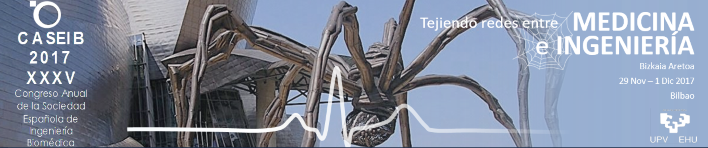

CASEIB 2017: Programa Definitivo
REGISTRO, Miércoles 29 de Noviembre, 08:30-09:30 HALL
PROCESADO 1, Miércoles 09:30-11:00 ARRIAGA
Chairs: José Joaquín Rieta/Erik Alonso
09:30-09:45, Artzai Picón
Detección de fibrilación ventricular mediante técnicas de aprendizaje profundo
Artzai Picon1, Unai Irusta2, Aitor Alvarez-Gila1, Elisabete Aramendi2, Estibaliz Garrote1, Unai Ayala3, Carlos Figuera4, Felipe Alonso-Atienza5
1Tecnalia, 2UPV/EHU, 3Mondragon Unibertsitatea, 4Rey Juan Carlos University, 5Universidad Rey Juan Carlos
09:45-10:00, Beatriz Chicote
Predicción del éxito de la desfibrilación mediante entropía difusa en términos de recuperación de ritmo cardíaco regular, pulso y supervivencia
Beatriz Chicote1, Unai Irusta1, Elisabete Aramendi1, Karlos Ibarguren2, Daniel Alonso3, Jose Francisco Veintemillas2, Carlos Corcuera2, Mª del Mar Vaqueriza2, Fernando Vicente2
1UPV/EHU, 2Emergentziak-Osakidetza, Servicio Vasco de Salud (Osakidetza),Bilbao, 3Emergentziak-Osakidetza, Servicio Vasco de Salud (Osakidetza), Bilbao
10:00-10:15, Iraia Isasi
Solución Multietapa para Diagnóstico del Ritmo Cardíaco durante la Resucitación Cardiopulmonar
Iraia Isasi1, Unai Irusta2, Elisabete Aramendi2, Unai Ayala3, Erik Alonso2
1Communications Engineering, University of the Basque Country (UPV/EHU), Bilbao, Spain, 2UPV/EHU, 3Universidad de Mondragón
10:15-10:30, Andoni Elola
Potencial de la señal de capnografía para la detección de pulso durante la resucitación cardiopulmonar
Andoni Elola1, Elisabete Aramendi1, Unai Irusta1, Ines Alvarez2, Erik Alonso1
1UPV/EHU, 2EHU/UPV
10:30-10:45, Raul Alcaraz
Estudio de la Variabilidad del Intervalo TQ para la Detección Automática de Episodios Cortos de Fibrilación Auricular
Juan Ródenas1, Manuel García1, Raul Alcaraz2, José J Rieta3
1Universidad de Castilla-La Mancha, 2University of Castilla-La Mancha, 3BioMIT.org, Electronic Eng. Dept., UPV
10:45-11:00, Diego Osorio
Método de Delineación de Electrogramas Fragmentados en Fibrilación Auricular
Diego Osorio1, Raul Alcaraz2, José J Rieta1
1BioMIT.org, Electronic Eng. Dept., UPV, 2University of Castilla-La Mancha
IMAGEN 1, Miércoles 9:30-11:00 BAROJA
Chairs: Mónica Abella/Gloria Bueno
09:30-09:45, Elisa Moya-Sáez
Implementación Paralela de Secuencias de Resonancia Magnética mediante Programación en GPU.
Elisa Moya-Sáez, Daniel Treceño-Fernández, Rodrigo de Luis-García, Federico Simmross-Wattenberg, Carlos Alberola-López
Universidad de Valladolid
09:45-10:00, Paula Moreno
Desarrollo de algoritmos automáticos para evaluar la calidad de imagen en TC y RM.
Paula Moreno Ruiz1, Enrique Ruiz Martinez2, Ángel Alberich-Bayarri3, Luis Martí-Bonmatí4, David Vivas Consuelo5
1Universidad Politecnica de Valencia, 2Grupo de Investigación Biomédica en Imagen (GIBI2^30), Instituto de Investigación Sanitaria La Fe, 3QUIBIM SL, Quantitative Imaging Biomarkers in Medicine, 4Área Clínica de Imagen Médica, Hospital Universitario i Politécnico de La Fe, 5Centro de Investigación de economía y gestión de la salud
10:00-10:15, Álvaro Martínez
XAPLAB: Software de diseño de protocolos de adquisición con equipos de rayos X
Álvaro Martínez Martínez1, Alba García Santos2, Ramón Polo Cezón2, Manuel Desco Menéndez1, Mónica Abella García2
1Instituto de Investigación Sanitaria Gregorio Marañón, 2Dept. Bioingeniería e Ingeniería Aeroespacial, Universidad Carlos III de Madrid
10:15-10:30, Santiago Sanz
ADC-Weighted Joint Registration-Estimation for Cardiac Diffusion Magnetic Resonance Imaging
Santiago Sanz Estébanez1, Javier Royuela-del-Val1, Jordi Broncano-Cabrero2, Santiago Aja-Fernández1, Carlos Alberola-López1
1University of Valladolid, 2Health Time Group
10:30-10:45, Alejandro Godino-Moya
Avoiding additional hardware and recovering cardiac information from k-space
Alejandro Godino-Moya1, Thibauld Cloquell2, Javier Royuela-del-Val1, Marcos Martín-Fernández1, Carlos Alberola-López1
1Image Processing Laboratory, University of Valladolid, 2Polytech Scool of Grenoble, Grenoble Alpes University
10:45-11:00, Alejandro Rodríguez
An automated pipeline based on computational algorithms to extract Imaging Biomarkers and integrate them to calculate a new parameter to assess bone fracture: Quality of Trabecular Structure (QTS)
Amadeo Ten Esteve1, Fabio Garcia-Castro2, Raul Garcia-Marcos1, Mª Angeles Pérez3, Luis Marti-Bonmati4, Angel Alberich-Bayarri4
1Grupo de Investigación Biomédica en Imagen (GIBI230), Hospital Universitario y Politécnico La Fe, Valencia, Spain, 2Quantitative Imaging Biomarkers in Medicine, Quibim S.L, Valencia, Spain, 3M2BE-Unizar, Universidad de Zaragoza, Zaragoza, Spain, 4Grupo de Investigación Biomédica en Imagen (GIBI230), Hospital Universitario y Politécnico La Fe, Valencia, Spain and Quantitative Imaging Biomarkers in Medicine, Quibim S.L, Valencia, Spain
INSTRUMENTACIÓN, Miércoles 09:30-11:00 OTEIZA
Chairs: Javier García Casado/Oskar Casquero
09:30-09:45, Iñigo Aramendia
Aerosol Delivery by Inhalation Catheter and Trachea Digitalization
Iñigo Aramendia, Unai Fernandez-Gamiz, Alberto Lopez-Arraiza, Miguel Angel Gomez Solaetxe, Lander Barrenetxea, Eneko Solaberrieta, Rikardo Minguez, Javier Sancho
University of the Basque Country UPV/EHU
9:45-10:00, Javier Reina
Dispositivo portable para la monitorización no obstructiva del ritmo respiratorio
David Naranjo1, Laura Roa2, Javier Reina2, Gerardo Barbarov2, Pilar Cejudo3, Eduardo Márquez3, Rosa Vázquez3, Francisco Ortega3
1Universidad de Sevilla - CIBER-BBN, 2Universidad de Sevilla, 3Hospital Universitario Virgen del Rocío
10:00-10:15, Maider Nuñez
Diseño de plataforma para la captura y análisis de datos de electroencefalografía combinados con fotopletismografía para la detección de umbrales de dolor en población sana y patológica
Maider Nuñez Ibero1, J.M. Cortés2, Javier Ortiz Álvarez-Cienfuegos3
1Universidad del País Vasco / Euskal Herriko Unibertsitatea, 2Biocruces Health Research Institute, 3Escuela de Ingeniería de Bilbao - EHU/UPV
10:15-10:30, Juan A. Sánchez-Margallo
Evaluación de la calidad de la cirugía y ergonomía del cirujano durante la anastomosis uretrovesical realizada con un instrumental robotizado
Juan A. Sánchez-Margallo1, Francisco M. Sánchez-Margallo2, Andreas Skiadopoulos3, Kostas Gianikellis4
1Minimally Invasive Surgery Centre, 2Centro de Cirugía de Mínima Invasión Jesús Usón, 3University of Nebraska at Omaha, 4Universidad de Extremadura
PÓSTER 1, Miércoles 11:00-12:00 HALL
11:00-12:00, Karen Lopez-Linares
DCNN-based aortic aneurysm segmentation and volume quantification from CTA images
Karen Lopez-Linares1, Nerea Aranjuelo2, Luis Kabongo2, Gregory Maclair2, Nerea Lete2, Mario Ceresa3, Ainhoa García-Familiar4, Iván Macía2, Miguel Angel Gonzalez Ballester3
1Vicomtech-IK4, Universitat Pompeu Fabra, 2Vicomtech-IK4, 3Universitat Pompeu Fabra, 4Hospital Universitario Donostia
11:00-12:00, Raul Alcaraz
Reducción del Ruido de Red en Electrogramas Auriculares Mediante Transformada Wavelet Estacionaria
Miguel Martínez1, Juan Ródenas1, Raul Alcaraz2, José J Rieta3
1Universidad de Castilla-La Mancha, 2University of Castilla-La Mancha, 3BioMIT.org, Electronic Eng. Dept., UPV
11:00-12:00, Mario Ceresa
Surgical planning system for twin-to-twin transfusion syndrome fetal surgery
Mario Ceresa1, Jordina Torrents-Barrena1, Narcis Masoller2, Elisenda Eixarch2, Miguel Angel Gonzalez Ballester3
1Universitat Pompeu Fabra, 2Fetal i+D Fetal Medicine Research Center, Hospital Clínic and Hospital Sant Joan de Deu, 3Universitat Pompeu Fabra, ICREA
11:00-12:00, Ignacio Oropesa
Desarrollo de una placa de osteosíntesis personalizada como técnica de fijación y posicionamiento simultáneo del maxilar superior en osteotomías tipo Lefort I en cirugía ortognática
M. Baltasar1, J. Acero2, I. Oropesa1, E.J. Gómez1, Patricia Sánchez3
1Grupo de Bioingeniería y Telemedicina. Universidad Politécnica de Madrid, 2Hospital Universitario Ramón y Cajal, 3Grupo de Bioingenieria y Telemedicina. Universidad Politécnica de Madrid
11:00-12:00, Bruno Paun
Quantification of the Detailed Cardiac Ventricular Trabecular Morphogenesis in the Mouse Embryo
Bruno Paun1, Bart Bijnens2, Andrew Cook3, Timothy Mohun4, Oscar Camara1, Constantine Butakoff1
1Universitat Pompeu Fabra, 2Universitat Pompeu Fabra, ICREA, KU Leuven, 3UCL Institute of Cardiovascular Science, University College London, 4The Francis Crick Institute
11:00-12:00, Irene Mayorga-Ruiz
Desarrollo de una metodología de segmentación y cuantificación automática mediante un umbral adaptativo del enfisema y las regiones de baja densidad funcional pulmonar a partir de imágenes de TCMD
Irene Mayorga-Ruiz1, Fabio García-Castro1, Raúl Yébana-Huertas1, Luis Martí-Bonmati2, Ángel Alberich-Bayarri1
1QUIBIM SL, 2Hospital Universitari i Politécnic La Fe
11:00-12:00, Oscar Cámara
Cardiac Computer-Aided Diagnosis using Cine-MRI Radiomics
Irem Cetin, Gerard Sanroma, Oscar Camara, Miguel-Angel Gonzalez Ballester, Karim Lekadir
Universitat Pompeu Fabra
11:00-12:00, Gabriel Bernardino
Right ventricular strain from cardiac cine MRI: a flattening approach
Gabriel Bernardino1, Bruno Paun1, Alvaro Sepulveda2, Merida Rodriguez2, Fatima Crispi2, Alexandra Groth3, Juergen Weese3, Miguel Angel Gonzalez-Ballester4, Constantine Butakoff1, Mathieu De Craene3, Bart Bijnens4
1Universitat Pompeu Fabra, 2Hospital Clinic, 3Philips, 4Universitat Pompeu Fabra, ICREA
11:00-12:00, Raimon Jané>
Continuous adventitious respiratory sound analysis for the assessment of bronchodilator response in asthma patients
Manuel Lozano García1, José Antonio Fiz2, Carlos Martínez Rivera2, Aurora Torrents2, Juan Ruiz Manzano2, Raimon Jané1
1Institute for Bioengineering of Catalonia, 2Servicio de neumología, Hospital Universitario Germans Trias i Pujol
11:00-12:00, Saúl Palacios
Changes in sympathetic modulation of ECG repolarization associated with long-term microgravity exposure
Saúl Palacios1, Juan Pablo Martínez2, Esther Pueyo3
1Universidad de Zaragoza, 2jpmart@unizar.es, 3epueyo@unizar.es
11:00-12:00, Beatriz Giraldo
Relationship between Heart Rate Excursion and Apnea Duration in patients with Obstructive Sleep Apnea
Jordi Solà Soler1, Beatriz Giraldo2, José Antonio Fiz3, Raimon Jané4
1Universitat Politècnica de Catalunya, 2Universidad Politécnica de Cataluña, 3Hospital Universitari Germans Trias i Pujol, 4IBEC
11:00-12:00, Magda Ràfols de Urquía
Caracterización de la actividad muscular respiratoria en señales de electromiografía de superficie adquiridas mediante electrodos anulares concéntricos
Magda Ràfols de Urquía1, Josep Estévez2, Luis Carlos Estrada Petrocelli3, Javier García-Casado4, Gema Prats Boluda4, Leonardo Sarlabous5, Raimon Jané1, Abel Torres6
1IBEC, 2Institute or Bioengineering of Catalonia (IBEC), Universitat Politècnica de Catalunya (UPC), 3Institut de Bioenginyeria de Catalunya, The Barcelona Institute of Science and Technology, Barcelona, Spain. Universitat Politècnica de Catalunya (UPC) – Barcelona Tech, Barcelona, Spain. Biomedical Research Networking Center in Bioengineering, Biomaterials and Nanomedicine (CIBER-BBN), Spain, 4Centro de Investigación e Innovación en Bioingeniería, 5Institute for Bioengineering of Catalonia (IBEC), The Barcelona Institute of Science and Technology, Barcelona, Spain. Center for Networked Biomedical Research on Bioengineering, Biomaterials and Nanomedicine (CIBER-BBN), Spain. Department of Automatic Control, Universitat Politècnica de Catalunya - BarcelonaTech (UPC), Barcelona, Spain, 6Institute for Bioenginyeering of Catalonia (IBEC), The Institute of Science and Technology, Barcelona, Spain. Center of Networked Biomedical Research on Bioengineering, Biomaterials and Nanomedicine (CIBER-BBN), Spain. Department of Automatic Control, Universitat Politècnica de Catalunya - BarcelonaTech (UPC), Barcelona, Spain
11:00-12:00, Leonardo Sarlabous
Estimation of the inspiratory mechanical muscle activation during breathing in healthy subjects and COPD patients
Leonardo Sarlabous1, Abel Torres Cebrián2, José Antonio Fiz Fernández3, Juana M. Martínez Llorens4, Joaquin Gea Guiral4, Raimon Jané Campos1
1Institute for Bioengineering of Catalonia (IBEC), The Barcelona Institute of Science and Technology, Barcelona, Spain. Center for Networked Biomedical Research on Bioengineering, Biomaterials and Nanomedicine (CIBER-BBN), Spain. Department of Automatic Control, Universitat Politècnica de Catalunya - BarcelonaTech (UPC), Barcelona, Spain, 2Institute for Bioengineering of Catalonia (IBEC), The Barcelona Institute of Science and Technology, Barcelona, Spain. Center for Networked Biomedical Research on Bioengineering, Biomaterials and Nanomedicine (CIBER-BBN), Spain. Department of Automatic Control, Universitat Politècnica de Catalunya - BarcelonaTech (UPC), Barcelona, Spain., 3Institute for Bioengineering of Catalonia (IBEC), The Barcelona Institute of Science and Technology, Barcelona, Spain. Center for Networked Biomedical Research on Bioengineering, Biomaterials and Nanomedicine (CIBER-BBN), Spain., 4Department of Respiratory Medicine, Hospital del Mar – IMIM. DCEXS, UPF. CIBERES, ISCiii. Barcelona, Spain
11:00-12:00, María Rodríguez
TEMPORAL RECRUITMENT OF FORELIMB PROXIMAL AND DISTAL MUSCLES DURING REACHING AND GRASPING
María Rodríguez Cañón1, Raimon Jané2, Guillermo Garcia Alias3
1UAB-IBEC, 2IBEC, 3UAB
11:00-12:00, Beatriz Giraldo
Eigenvalue-Based Time Delay Estimation of Repetitive Biomedical Signals
Pablo Laguna1, Ainara Garde2, Olivier Meste3, Beatriz Giraldo4, Raimon Jane4, Leif Sörnmo5
1Zaragoza University, 2Biomedical Signals and Systems, Faculty of Electrical Engineering, Mathematics and Computer Science, University of Twente, Enschede, The Netherlands, 3Laboratoire d’Informatique, Signaux et Systèmes, Universite de Nice, Sophia Antipolis, France, 4Department of ESAII, Universitat Politècnica de Catalunya, Institut de Bioenginyeria de Catalunya, Barcelona, Spain, 5Department of Biomedical Engineering and CIEL Center, Lund University, Lund, Sweden.
11:00-12:00, Rubén García
Impresión 3D en el Sistema Sanitario: Una revolución a medida
RUBÉN GARCÍA FERNÁNDEZ1, INES GALLEGO CAMIÑA2, RAQUEL BENITO RUIZ DE LA PEÑA2, OLIVIA MARIA RODRIGUEZ SAN VICENTE2, AINHOA GANDIAGA MANDIOLA2, LUIS ANGEL RUBIO ROMERO2, LUIS BARBIER HERRERO2, ROBERTO VOCES SÁNCHEZ2, M CARMEN PRADO FERNANDEZ2
1IIS Biocruces, 2OSI EEC
10:30-11:30
Daniel Ruiz
App móvil para el seguimiento continuo de la hipertensión y mejora de la adherencia al tratamiento.
ALBERTO DE RAMON FERNANDEZ, Daniel Ruiz Fernández, Diego Marcos Jorquera, Virgilio Gilart Iglesias, Víctor Vives, Ángela Sanjuan Quiles
UNIVERSIDAD DE ALICANTE
CONFERENCIA INVITADA, Miércoles 12:00-13:00 MITXELENA
Ingeniería de Nanomateriales para Aplicaciones Biomédicas
Dr. Luis M. Liz-Marzán
MESA REDONDA, Miércoles 13:0-14:00 MITXELENA
Retos y experiencias en la transferencia tecnológica en Ingeniería Biomédica
Moderador
Josu Aguirrebeitia, profesor titular de la escuela de ingeniería de Bilbao (UPV/EHU)
Participantes
María Pascual de Zulueta, Directora Gerente del Basque Health Cluster
Inés Gallego, Subdirectora de Innovación y Calidad del Hospital Universitario Cruces (Osakidetza)
Enrique Hilario, Facultad de Medicina y Odontología (UPV/EHU)
Thierry Keller, Director del Área de Neurorehabilitación. División de Salud del Centro Tecnológico Tecnalia
Mikel Álvarez, Director de Desarrollo de Negocio y Relaciones Institucionales del Centro de promoción de la Corporación Mongragón
TELEMEDICINA 1, Miércoles 15:00-16:00 ARRIAGA
Chairs: Laura Roa/Isabel Román
3:00-3:15, Isabel Román
Adaptación de sistemas heredados mediante la especificación HL7 FHIR
Miguel Pedrera-Jiménez1, Jorge Calvillo1, Isabel Román-Martínez2, Laura M Roa-Romero3
1Universidad de Sevilla, 2Departamento de Ingeniería Telemática, Universidad de Sevilla, 3Grupo de Ingeniería Biomédica, Universidad de Sevilla; CIBER-BBN
3:15-3:30, Aitor Sanchoyerto
Oportunidades para la transmisión de información medica en las nuevas redes de misión critica
Aitor Sanchoyerto and Fidel Liberal
UPV/EHU
3:30-3:45, Yasuara Noval
Estudio comparativo de plataformas y herramientas de tratamiento de sistemas Big Data en Telemedicina
Yasuara Noval1 and Koldo Espinosa Acereda2
1Alumna del máster en Ingeniería Biomédica, Escuela de Máster y Doctorado, UPV/EHU, 2Dpto. Ingeniería de Comunicaciones ETSI–Bilbao, UPV/EHU
3:45-4:00, Bruna Correa
Diseño de una Interfaz entre la Monitorización del Enfermo Crítico y el Sistema Domótico de una Unidad de Cuidados Intensivos Inteligente
Bruna Correa1, José M. Nicolás2, Neus Vidal3, Pedro Castro2, Sara Fernandez2
1Fundacio Clínic per la recrea biomedica, 2Hospital Clinic de Barcelona, 3Departamento de Electrónica. Universidad de Barcelona
MODELADO 1, Miércoles 15:00-16:00 BAROJA
Chairs: Beatriz Giraldo/Luis Coelho
3:00-3:15, Miguel Ángel Cámara
Inclusión de información a priori en la solución del problema inverso de electrocardiografía durante fibrilación auricular
Miguel Ángel Cámara Vázquez1, Víctor Suárez-Gutiérrez1, Ismael Hernández2, Felipe Alonso-Atienza1, Carlos Figuera1, María S. Guillem3, Andreu M. Climent4, Óscar Barquero-Pérez1
1Universidad Rey Juan Carlos, 2Universidad Rey Juan Carlos, Universitat Politècnica de València, 3ITACA, Universitat Politècnica de València, 4Instituto de Investigación Sanitaria, Hospital Gregorio Marañón
3:15-3:30, Jorge Sánchez
Estudio mediante simulación computacional del acoplamiento eléctrico entre miocitos auriculares y fibroblastos en condiciones fisiológicas y de fibrilación auricular crónica
Jorge Sánchez1, Beatriz Trenor1, Javier Saiz2
1Centro de Investigación e Innovación en Bioingeniería (Ci2B), Universidad Politècnica de València, 2Centro de Investigación e Innovación en Bioingeniería (Ci2B), Universitat Politècnica de València
3:30-3:45, Francisco Jose Alvarez
Validación del Cálculo y Representación Gráfica de la Mecánica Pulmonar durante la Ventilación Mecánica
Francisco Jose Alvarez Diaz1, Hector Lafuente Echevarria2, Juan Bautista Galdiz Iturri2, Enrique Hilario Rodriguez3, Antonia Alvarez Diaz3
1Instituto Biocruces, Hospital Universitario Cruces, 2Instituto Biocruces, Hospital Universitario Cruces, Barakaldo, 3Departamento Biología Celular e Histología, Universidad del País Vasco/Euskal Herriko Unibertsitatea, Leioa
3:45-4:00, Raul Caulier
Entrainment Model Based on Spatio-temporal Impulse Response and Restitution Properties
Raul Caulier Cisterna1, Sergio Muñoz Romero1, Arcadi García Arberola2, Jesús Almendral Garrote3, Jose Luis Rojo-Alvarez1
1Universidad Rey Juan Carlos, 2Unidad de Arritmias, Hospital General Universitario Virgen de la Arrixaca, El Palmar, Murcia, 3Laboratorio de Electrofisiología y Unidad de Arritmias, Hospital Monte Principe, Grupo HM Hospitales Universitario CEU- SAn Pablo, Madrid
Miércoles, BIOMATERIALES 1, Miércoles 15:00-16:00 OTEIZA
Chairs: José Ramón Sarasua/Begoña García-Zapirain
3:00-3:15, Eva Sanchez
Polímeros biodegradables con moléculas biológicamente activas para la prevención de infecciones en dispositivos biomédicos
Eva Sanchez, Emiliano Meaurio, José Ramón Sarasua
UPV/EHU
3:15-3:30, Amaia Butron
Biodegradable Polyester / Cristalline Nanocellulose Nanocomposites for Biomedical Applications: Preparation and Characterization.
Amaia Butron, Olatz Llorente, Jorge Fernandez, Emilio Meaurio, Joserra Sarasua
EHU
3:30-3:45, Hegoi Amestoy
Propiedades mecánicas de nanocomposites de matriz Poli-lactida-ε-caprolactona reforzados con nanotubos de carbono funcionalizados con polivinilpirrolidona y polidopamina
Hegoi Amestoy1, Helen Tungstal2, Emiliano Meaurio1, Jose Ramon Sarasua1
1UPV/EHU, 2edinburgh school of chemistry
3:45-4:00, Igor Puerto
Andamios de PLGA/nHA para regeneración ósea, efectos de su composición sobre Citotoxicidad y degradación In Vitro
Esperanza Díaz, Igor Puerto, Itsaso Ibáñez
Universidad del País Vasco (UPV/EHU)
Miércoles, SISTEMAS INTELIGENTES Y SENSORES, Miércoles 16:00-17:00 ARRIAGA
Chairs: Isabel Román/Laura Roa
4:00-4:15, Amaia Uresandi
Implementación de un sistema de trazabilidad de la temperatura de conservación y transporte de los concentrados de hematíes enviados a quirófano. Reutilización de los hemoderivados bien conservados
Miriam Vara Pampliega1, Amaia Uresandi Iruin2, Juan José Mateos Mazón3, Raquel Benito Ruiz de la peña4, Iker Ustarroz Aguirre5, Juan Carlos García Ruiz3
1Servicio de Hematología. Hospital Universitario Cruces at Baracaldo, 2Serviico de Hematología. Hospital Universitario Cruces. Baracaldo, 3Servicio de Hematología. Hospital Universitario Cruces. Baracaldo, 4Unidad de innovación. OSI-EEC. Baracaldo., 5Evaluación económica. OSI-EEC. Baracaldo
4:15-4:30, María Helena Hernando
Optimización de las redes de tratamiento en drogodependencia mediante el uso de servicios cognitivos en la nube
Carmen Pérez-Gandía1, Jose M. Iniesta Chamorro2, Jose Tapia Galisteo2, Gema García-Saez2, Clara Madrigal2, Diego Urgeles3, María Elena Hernando4
1(1) Centro de Investigación en Red en Bioingenería, Biomateriales y Nanomedicina, CIBER, Madrid, España; (2) Grupo de Bioingeniería y Telemedicina (GBT), Dpto. de Tecnología Fotónica y Bioingeniería, Universidad Politécnica de Madrid, 2Grupo de Bioingeniería y Telemedicina (GBT), Dpto. de Tecnología Fotónica y Bioingeniería, Universidad Politécnica de Madrid, España, 3Psiquiatría. Responsable de I+D+I. Nuestra Señora de la Paz, Madrid, España, 4(1) Grupo de Bioingeniería y Telemedicina (GBT), Dpto. de Tecnología Fotónica y Bioingeniería, Universidad Politécnica de Madrid, España; (2) Centro de Investigación en Red en Bioingenería, Biomateriales y Nanomedicina, CIBER, Madrid, España
4:30-4:45, Paloma Caramé
Detección y clasificación de patrones globales en lesiones pigmentadas
Paloma Caramé1, Carmen Serrano1, Begoña Acha2
1Universidad de Sevilla, 2University of Seville
4:45-5:00, Félix Fanjul
Análisis de la radiación óptica sobre cianobacterias en foto-biorreactores
Félix Fanjul Vélez1, Laura Arévalo Díaz2, José Luis Arce Diego2
1Applied Optical Techniques Group, TEISA Department, University of Cantabria, 2Grupo de Técnicas Ópticas Aplicadas, Universidad de Cantabria
PROCESADO 2, Miércoles 16:00-17:00 BAROJA
Chairs: Luis Coelho/Beatriz Giraldo
4:00-4:15, Raul Alcaraz
Estudio de Alternativas para Reducir Ruido de Alta Frecuencia en Electrogramas Bipolares de Fibrilación Auricular
Miguel Martínez1, Juan Ródenas1, Raul Alcaraz2, José J Rieta3
1Universidad de Castilla-La Mancha, 2University of Castilla-La Mancha, 3BioMIT.org, Electronic Eng. Dept., UPV
4:15-4:30, Nuria Ortigosa
Estudio de la onda P en registros electrocardiográficos de pacientes con fibrilación auricular paroxística antes y después del aislamiento de las venas pulmonares
Nuria Ortigosa1 and Óscar Cano2
1Universitat Politècnica de València, 2Hospital Universitari i Politècnic La Fe
4:30-4:45, Diego Osorio
Estimación de la Longitud del Ciclo Auricular en Electrogramas de Fibrilación Auricular: Estudio Comparativo
Diego Osorio1, Raul Alcaraz2, José J Rieta1
1BioMIT.org, Electronic Eng. Dept., UPV, 2University of Castilla-La Mancha
4:45-5:00, Raul Alcaraz
Análisis Espectral del ECG Como Asistencia para la Terminación de Ablación por Catéter en Fibrilación Auricular
Raul Alcaraz1, Fernando Hornero2, José J Rieta3
1University of Castilla-La Mancha, 2Servicio de Cirugía Cardíaca, Hospital Clínico Universitario de Valencia, 3BioMIT.org, Electronic Eng. Dept., UPV
Miércoles, IMAGEN 2, Miércoles 16:00-17:00 OTEIZA
Chairs: Begoña García-Zapirain/José Ramón Sarasua
4:00-4:15, Jaime Gallego
Serial Section Alignment of Histopathological Images stained with different Biomarkers
Jaime Gallego, M. Milagro Fernández-Carrobles, Óscar Déniz, Gloria Bueno
UCLM
4:15-4:30, Gloria Bueno
Ki67 Hot-Spots Detection on Histopathological Images of Breast Carcinoma using Convolutional Neural Networks
Jaime Gallego1, Zaneta Swiderska-Chadaj2, Óscar Déniz1, Gloria Bueno1
1UCLM, 2Warsaw University of Technology
4:30-4:45, Juan Pablo Salado
Contaje de mitosis en imágenes histológicas mediante redes neuronales convolucionales
Juan Pablo Salado1, Artzai Picon2, Arantza Bereciartua2, Unai Irusta1
1UPV, 2Tecnalia
4:45-5:00, Alejandro Rodríguez
Desarrollo de un algoritmo de segmentación para la detección de diferentes componentes tisulares para la valoración de daño hepático
ALEJANDRO RODRÍGUEZ1, Amadeo Ten2, Judith Pérez-Rojas3, Ángel Alberich-Bayarri4, Luis Martí-Bonmatí5
1GIBI230-Instituto de Investigación Sanitaria Hospital Universitario i Politécnico de La Fe, 2de Investigación Biomédica en Imagen (GIBI230), Instituto de Investigación Sanitaria La Fe, 3Servicio de Anatomía Patológica, Hospital Universitario y Politécnico de La Fe, 4Quantitative Imaging Biomarkers in Medicine, Quibim SL, 5Servicio de Radiología, Hospital Universitario y Politécnico de La Fe
PROCESADO 3, Miércoles 17:30-19:00 ARRIAGA
Chairs: Roberto Hornero/Raúl Alcaraz
5:30-5:45, Fernando Vaquerizo
Análisis de fluctuaciones sin tendencias (DFA) en los registros de oximetría para la ayuda en el diagnóstico del síndrome de la apnea-hipopnea del sueño infantil
Fernando Vaquerizo Villar1, Daniel Álvarez González2, Leila Kheirandish Gozal3, Gonzalo César Gutiérrez Tobal1, Verónica Barroso-García1, Roberto Romero4, Andrea Crespo Sedano2, Félix del Campo Matías2, David Gozal3, Roberto Hornero5
1Grupo de Ingeniería Biomédica, Universidad de Valladolid, Valladolid, España, 2Servicio de Neumología, Hospital Universitario Río Hortega, Valladolid, España, 3Deptartment of Pediatrics, Pritzker School of Medicine, Biological Sciences Division, The University of Chicago, Chicago, 4Grupo de Ingeniería Biomédica, Universidad de Valladolid, 5Universidad de Valladolid
5:45-6:00, Sara Reis
Towards a Quantification of EEG Brain Activity in the Self-Pacing Regime
Joana Silva1, António Martins da Silva2, Sara Reis3, Luis Coelho3
1ISEP, 2ICBAS - Universidade do Porto, 3Instituto Superior de Engenharia do Porto
6:00-6:15, Saul Jose Ruiz
Caracterización de los Patrones de Flujo de Información en el EEG de Pacientes con Deterioro Cognitivo Leve
Saul Jose Ruiz Gomez1, Carlos Gómez Peña1, Jesús Poza2, Pablo Núñez Novo1, Víctor Rodríguez González1, Miguel Ángel Tola-Arribas3, Mónica Cano del Pozo4, Roberto Hornero5
1Grupo de Ingeniería Biomédica, Universidad de Valladolid, 2Biomedical Engineering Group (University of Valladolid), 3Departamento de Neurología, Hospital Universitario Río Hortega, 4Departamento de Neurofisiología Clínica, Hospital Universitario Río Hortega, 5Universidad de Valladolid
6:15-6:30, Armando Malanda
Promediado de potenciales de acción de unidad motora basado en ventanas deslizantes
Armando Malanda1, Ignacio Rodríguez-Carreño2, Javier Navallas-Irujo1, Javier Rodríguez-Falces1, Miguel Fernández-Martínez1, Luis Gila-Usero3
1Universidad Pública de Navarra, 2Universidad de Navarra, 3Complejo Hospitalario de Navarra
6:30-6:45, Carlos Benalcazar
Improvement of non-invasive intrauterine pressure estimation based on Electrohysterogram
Carlos Benalcazar Parra1, Carlos Sempere Santos2, Javier Mas3, Yiyao Ye Lin2, Jose Alberola Rubio4, Alfredo Perales Marin4, Angel López Corral4, Javier García-Casado5, Gema Prats Boluda2
11 Centro de investigación e innovación en bioingeniería, 2Centro de investigación e innovación en bioingeniería, Universidad Politecnica de Valencia, 3Universidad Politécnica de Valencia, 4Servicio de Obstetricia y Ginecología, Hospital Universitario y Politécnico La Fe de Valencia, 5Centro de Investigación e Innovación en Bioingeniería
6:45-7:00, Javier Mas
Caracterización de la complejidad de la señal electrohisterográfica en mujeres con amenaza de parto prematuro mediante Lempel-Ziv
Javier Mas1, Yiyao Ye-Lin1, Carlos Benalcazar-Parra1, Jose Alberola-Rubio2, Alfredo Perales Marin2, Javier García-Casado1, Gema Prats-Boluda1
1Universidad Politécnica de Valencia, 2Hospital Universitari i Politècnic la Fe
Miércoles, IMAGEN 3, Miércoles 17:30-19:00 OTEIZA
Chairs: Begoña Acha/Juanjo Vaquero
5:30-5:45, Alain Sánchez
Solución tecnológica para el cálculo automático de la escala de Boston sobre imágenes colonoscópicas
Alain Sánchez
Universidad de Deusto
5:45-6:00, Irene Mayorga-Ruiz
Detección e identificación de vértebras en imágenes de TC empleando técnicas de inteligencia artificial y procesamiento de imagen
Ana Jimenez-Pastor1, Ángel Alberich-Bayarri1, Belén Fos-Guarinós1, Fabio García-Castro1, Luis Martí-Bonmatí2
1QUIBIM SL, 2GIBI230, Instituto de Investigación Sanitaria La Fe
6:00-6:15, Xiaolin Ye
Extracción de superficie con escáner de luz estructurada para tomografía de ángulo limitado
Xiaolin Ye1, Claudia de Molina Gomez1, Nerea Ballesteros Tenrero1, Álvaro Martínez Martínez1, Manuel Desco Menéndez2, Mónica Abella García1
1UC3M, 2Instituto de Investigación Sanitaria Gregorio Marañón
6:15-6:30, Nerea Ballesteros
Corrección de artefacto por movimiento respiratorio para TAC de pequeño animal en estudios con bajas dosis de radiación
Nerea Ballesteros Tenrero1, Claudia De Molina Gómez2, Manuel Desco Menéndez3, Mónica Abella García2
1UCM3, 2UC3M, 3Instituto de Investigación Sanitaria Hospital Gregorio Marañón
6:30-6:45, Arrate Muñoz-Barrutia
Accurate lung segmentation of thorax CT images on a Tuberculosis infection model
Blanca Zufiria1, Laura Fernandez-Terron1, Pedro M. Gordaliza1, Sally Sharpe2, Manuel Desco3, Arrate Munoz-Barrutia1, Juan José Vaquero1
1Universidad Carlos III de Madrid, 2Public Health England, 3Universidad Carlos III de Madrid
ACTO SOCIAL, Recepción en el ayuntamiento de Bilbao y coctail de bienvenida, Miércoles 19:30-23:00 HALL
REGISTRO, Jueves 08:30-09:30 HALL
TELEMEDICINA 2, Jueves 09:00-10:00 ARRIAGA
Chairs: Maria Elena Hernando/Javier Reina
09:00-09:15, Cristian Castillo
Machine learning para el análisis de terapia en Reminiscencia para personas con deterioro cognitivo
Begoña García-Zapirain Soto1, Juan Maria Zorriketa2, Andoni Ayarza3, Cristiàn Castillo Olea1, Alvaro Muro1
1University of Deusto, 2Federación Española de Asociaciones de Futbolistas Veteranos, 3Futbolistas FEAFV
09:15-09:30, Isabel Román
Sistema de respuesta vocal interactiva para el acceso a una plataforma de asistencia remota a pacientes nefrológicos
David Garduño1, Laura Roa2, Isabel Román1, Jorge Calvillo3
1Universidad de Sevilla, 2Universidad de Sevilla, Ciber-BBN, 3Universidad de Sevilla, Ciber- BBN
09:30-09:45, María Helena Hernando
Proyecto PREDIRCAM 2. Análisis preliminar de uso y valoración de la plataforma.
Jose Tapia1, Jose Iniesta1, Valeria Alcántara-Aragón2, Susana Rodrigo-Cano3, Ascensión Lupiañez2, María Jose Martinez4, Carmen Martínez2, Carmen Pérez-Gandía5, Susana Tenés3, J. Francisco Merino-Torres3, Cintia González2, Mª Elena Hernando1
1Grupo de Bioingeniería y Telemedicina, Universidad Politécnica, Madrid, 2Servicio de Endocrinología y Nutrición, Hospital de la Santa Creu I Sant Pau, Barcelona, 3Servicio de Endocrinología y Nutrición, Hospital Universitari i Politècnic La Fe, Valencia, 4Servicio de Endocrinología y Nutrición, Hospital de la Santa Creu I Sant Pau, Barcelona ---, 5Centro de Investigación Biomédica en Red en Bioingeniería, Biomateriales y Nanomedicina (CIBER-BBN), Universidad Politécnica de Madrid, Madrid
09:45-10:00, Daniel Ruiz
Sistema de entrenamiento para el masaje cardiaco en la reanimación cardiopulmonar
Daniel Ruiz Fernández1, Diego Marcos Jorquera1, Alberto de Ramón Fernández1, Victor Vives Boix1, Virgilio Gilart Iglesias1, Maribel Moreno García de Dionisio2
1Universidad de Alicante, 2Hospital Universitario de San Juan
Jueves, ROBÓTICA, Jueves 09:00-10:00 BAROJA
Chairs: Joaquín Roca/Itziar Cabanes
09:00-09:15, Andres Amarillo
Diseño cinemático de dispositivo de tracking del paciente para procedimientos quirúrgicos.
Andres Amarillo Espitia, Emilio Sanchez, Carlos Suarez, Jon Oñativia, Jorge Presa
researcher
09:15-09:30, Aitziber Mancisidor
Robot de rehabilitación configurable para terapias del miembro superior
Aitziber Mancisidor1, Itziar Cabanes2, Asier Zubizarreta3, Eva Portillo4, Ana Rodríguez5, Asier Brull3
1University of the Basque Country (UPV/EHU), 2UPV/EHU, 3Universidad del País Vasco (UPV/EHU), 4UPV-EHU, 5Universidad del País Vasco (UPV/EHU
09:30-09:45, M. Peral-Boiza
Virtual reality training platform for flexible ureterorenoscopy interventions with a minimally invasive surgical robot
M. Peral-Boiza1, T. Gómez-Fernández2, P. Sánchez-González3, B. Rodríguez-Vila4, E. J. Gómez3, A. Gutiérrez2
1E.T.S. Ingenieros de Telecomunicación, Universidad Politécnica de Madrid, Madrid, España, 21E.T.S. Ingenieros de Telecomunicación, Universidad Politécnica de Madrid, Madrid, España, 32Grupo de Bioingeniería y Telemedicina, E.T.S. Ingenieros de Telecomunicación, Centro de Tecnología Biomédica, Madrid, España; 3Centro de Investigación Biomédica en Red de Bioingeniería, Biomateriales y Nanomedicina, Madrid, España, 42Grupo de Bioingeniería y Telemedicina, E.T.S. Ingenieros de Telecomunicación, Centro de Tecnología Biomédica, Madrid, España; 3Centro de Investigación Biomédica en Red de Bioingeniería, Biomateriales y Nanomedicina, Madrid, España; 4Universidad Europea de Madrid, Villaviciosa de Odón, España
09:45-10:00, Juan Anso
Neuromonitoring during Robotic Cochlear Implantation: first clinical experience
Juan Anso1, Olivier Scheidegger2, Cilgia Dür3, Wilhelm Wimmer4, Kate Gavaghan4, Marco Caversaccio3, Stefan Weber4
1ARTORG Center, University of Bern, 2Department of Neurology, Inselspital, University of Bern, Bern, 3Department of ENT Surgery, Inselspital, University of Bern, Bern, 4ARTORG Center, University of Bern, Bern
PLANIFICACIÓN Y SIMULACIÓN QUIRURGICA, Jueves 09:00-10:00 OTEIZA
Chairs: Juan Alberto Sánchez/Victor Petuya
09:00-09:15, Ignacio Oropesa
Automatic detection of surgical instruments´state in laparoscopic video images using neural networks.
Celia Martín1, Ignacio Oropesa2, Juan Alberto Sánchez Margallo3, Francisco Miguel Sánchez Margallo3, Enrique J Gomez4, Patricia Sánchez5
1Universidad Politécnica de Madrid, 2Grupo de Bioingeniería y Telemedicina. Universidad Politécnica de Madrid, 3Centro de Cirugía de Mínima Invasión, 4Universidad Politecnica de Madrid, 5Grupo de Bioingenieria y Telemedicina. Universidad Politécnica de Madrid
09:15-09:30, Juan A. Sánchez-Margallo
Cirugía pancreática laparoscópica y por puerto único guiada por fluorescencia: Modelo de tumor pancreático, dosis y abordaje quirúrgico
Francisco M. Sánchez-Margallo1 and Juan A. Sánchez-Margallo2
1Centro de Cirugía de Mínima Invasión Jesús Usón, 2Minimally Invasive Surgery Centre
09:30-09:45, Felicia Alfano
Prone to supine surface-based registration for surgical planning in breast cancer treatment
Felicia Alfano1, Fernando Pérez García2, Juan Enrique Ortuño Fisac3, Mercedes Herrero Conde4, Oscar Bueno Zamora5, Felipe A. Calvo5, Santiago Lizarraga5, Andres Santos3, Javier Pascau6, María Jesús Ledesma7
1Biomedical Imaging Technologies, Universidad Politécnica de Madrid, 2Biomedical Imaging Technologies, Universidad Politécnica de Madrid, Madrid España; CIBER-BBN, Madrid, España, 3Biomedical Image Technologies, Universidad Politécnica de Madrid, Madrid España; CIBER-BBN, Madrid, España, 4Unidad de mama, Hospital de Madrid Sanchinarro, Madrid, España, 5Instituto de Investigación Sanitaria Gregorio Marañón. Madrid, España, 6Instituto de Investigación Sanitaria Gregorio Marañón. Madrid, España; Departamento de Bioingeniería e Ingeniería Aeroespacial. Universidad Carlos III de Madrid. Madrid, España, 7Universidad Politécnia de Madri
ACTO INAUGURAL, Jueves 10:00-10:30 MITXELENA
Sr. D. Patxi Juaristi, Vicerrector del Campus de Bizkaia de la UPV/EHU
Sr. D. Raimon Jané, Presidente de la Sociedad Española de Ingeniería Biomédica
Sra. Dña. Elisabete Aramendi, Presidenta del Comité Organizador CASEIB2017
Sra. Dña. María Aguirre Rueda, Directora de Investigación e Innovación Sanitarias del Departamento de Salud del Gobierno Vasco
Jueves, CONFERENCIA INAUGURAL, Jueves 10:30-11:30 MITXELENA
Signal Processing and Modelling Approaches in Atrial Fibrillation
Dr Luca Mainardi
Jueves, PÓSTER 2, Jueves 11:30-12:30 HALL
11:30-12:30, Thierry Keller
Diseño y desarrollo de un exoesqueleto de rehabilitación para prevenir el codo rígido
Borja Bonail1, Manuel Montejo1, Julius Klein1, Goran Bijelic1, Thierry Keller1, Milos Kostic1, Minja Belic2
1TECNALIA, 2University of Belgrade
11:30-12:30, Lara Diaz de Greñu
Diseño de un sistema de rehabilitación del miembro superior para supervivientes de ACV
Lara Diaz de Greñu1, Andrea Sarasola-Sanz2, Nerea Irastorza-Landa2, Ainara Garzo1, Julius Klein1, Manuel Montejo1, Thierry Keller1, Hector Lozano1, Cristina Rodríguez de Pablo1, Aitor Belloso1, Ana Bengoetxea3, Jon Arambarri4, Ander Ramos-Murguialday1
1TECNALIA, 2Institute of Medical Psychology and Behavioral Neurobiology, University of Tübingen, 3Université Libre de Bruxelles, 4VirtualWare Labs Foundation
11:30-12:30, Iñigo Sesar Gil
Caracterización del apoyo en la marcha asistida con una muleta
Iñigo Sesar Gil1, Itziar Cabanes2, Asier Zubizarreta2, Eva Portillo2, Ana Rodriguez2, Jon Torres-Unda2
1Universidad del País Vasco / Euskal Herriko Unibertsitatea, 2UPV/EHU
11:30-12:30, Ricardo Ron
Estudio de la usabilidad de dos tecnologías aplicadas a pacientes de ELA: Interfaz Cerebro-Computador y Eyetracker
Ricardo RON ANGEVIN1, Liliana García2, Véronique Lespinet-Najib2, Jean Marc André2
1Universidad de Málaga, 2ENSC-BordeauxINP
11:30-12:30, Jorge Otero
Characterization and Usability of Decellularized Lung-Based Hydrogels as 3D Printer Bioink
Jorge Otero1, Bryan Falcones2, Daniel Navajas2, Ramon Farre2
1Facultat de Medicina. Universitat de Barcelona., 2Facultat de Medicina. Universitat de Barcelona
11:30-12:30, Jorge Otero
Naturally-derived Hydrogels with Tunable Mechanical Properties for 3D Culture of Lung Adenocarcinome Cells
Bryan Falcones1, Jorge Otero2, Daniel Navajas1, Ramon Farre1
1Facultat de Medicina. Universitat de Barcelona, 2Facultat de Medicina. Universitat de Barcelona.
11:30-12:30, Ignasi Jorba
Multiscale Nonlinear Mechanics of Lung Extracellular Matrix
Ignasi Jorba1, Clara Valero2, Ramon Farre3, José Manuel Garcia-Aznar2, Daniel Navajas4
1Institute for Bioengineering of Catalonia (IBEC), 2Universidad de Zaragoza, 3Universitat de Barcelona, 4IBEC
11:30-12:30, Ignasi Jorba
Micromechanics of brain tissue measured with atomic force microscopy in Alzheimer’s disease mouse model
Maria José Menal1, Ignasi Jorba2, Isaac Almendros1, Ramon Farré1, Daniel Navajas3
1Universitat de Barcelona, 2Institute for Bioengineering of Catalonia (IBEC), 3IBEC
11:30-12:30, Marc Tudela
Powering implants by galvanic coupling: a preliminary analysis
Marc Tudela Pi and Antoni Ivorra
Universitat Pompeu Fabra
11:30-12:30, Manuel Montejo
Design and development of a transdermal drug delivery system
Beatriz Olalde, Manuel Montejo, Thierry Keller, Lara Diaz de Grenu, Goran Bijelic
TECNALIA
11:30-12:30, Oscar Sacristán
Development of a Test-Bench for the Accurate positioning of Scintillation Detector Modules for Medical Imaging Applications
Oscar Sacristan1, Guillermo García Anduaga2, Victor Petuya3
1European Organization for Nuclear Research, 2Departamento de Ingeniería de Sistemas y Automática, Escuela de Ingeniería de Gipuzkoa, UPV/EHU, 3Departamento de Ingeniería Mecánica, Escuela de Ingeniería de Bilbao, UPV/EHU Bilbao
11:30-12:30, Abel Torres
Neural inspiratory time detection from surface diaphragm electromyography
Luis Carlos Estrada Petrocelli, Abel Torres, Leonardo Sarlabous, Raimon Jané
Institut de Bioenginyeria de Catalunya, The Barcelona Institute of Science and Technology, Barcelona, Spain. Universitat Politècnica de Catalunya (UPC) – Barcelona Tech, Barcelona, Spain. Biomedical Research Networking Center in Bioengineering, Biomaterials and Nanomedicine (CIBER-BBN), Spain
11:30-12:30, Miguel Angel Selles
3D Woven Polymeric Material for Cartilage Replacement
Miguel Angel Selles, Elena Perez-Bernabeu, Samuel Sanchez-Caballero, Rafael Pla-Ferrando
Universitat Politècnica de València
11:30-12:30, Juan Soto
Célula Robotizada de Bajo Coste para Realizar Tinciones de Gram de Forma Automática
Juan Soto Rudas1, Cesar Peña Cortes2, Luis Mendoza1
1Universidad de Pamplona, Pamplona, Colombia
11:30-12:30, Luis Coelho
Human Actigraphy’s Analysis Through an Inertial Sensor
Juliana Guerra1, Luis Coelho2, Duarte Dias3, João Paulo Cunha4
1ISEP, 2Instituto Superior de Engenharia do Porto, 3INESC TEC – Instituto de Engenharia de Sistemas e Computadores, Tecnologia e Ciência, 4Faculdade de Engenharia da Universidade do Porto
11:30-12:30, Luis Coelho
Towards an Objective Criteria for the Diagnosis of Parkinson Disease Based on Speech Assessment
Juliana Teixeira1, Liliana Soares1, Maria Miguel1, Pedro Martins1, Cristina Lopes2, Sara Reis3, Luis Coelho3
1ISEP, 2ISCAP-IPP, 3Instituto Superior de Engenharia do Porto
11:30-12:30, Eneko Solaberrieta
Evaluación de un Articulador Virtual para la identificación de interferencias en movimientos mandibulares excéntricos
Jairo L. Ramón Valencia1, Martha C. Tamayo Muñoz1, Cecilia Ruiz Rubiano1, Eneko Solaberrieta2
1Universidad el Bosque (Bogotá, Colombia), 2UPV/EHU
PREMIO JM FERRERO, Jueves 12:30-14:00 MITXELENA
Chairs: Enrique Gómez/Manuel Desco/Unai Irusta
12:30-12:45, Iñigo Arranz
Utilización de microhilos magnéticos para promover la muerte de células de osteosarcoma mediante hipertermia magnética in vitro
Iñigo Arranz Bárcena1, Jay Campisi2, Ion Martínez de Apellániz3, Sara Lizarbe Sancha4, Oihane Mitxelena Iribarren1, Sergio Arana1, Valentina Zhukova5, Maite Mujika1, Arkady Zhukov5
1Ceit-IK4 y Tecnun (Universidad de Navarra), 2Universidad de Regis, 3Tecnun (Universidad de Navarra), 4Ceit-IK4, 5UPV/EHU (Universidad del País Vasco)
12:45-1:00, David Adolfo Sampedro-Puente
Caracterización de las respuestas a la estimulación beta-adrenérgica en el síndrome LQT1
David Adolfo Sampedro-Puente, Jesus Fernandez-Bes, Esther Pueyo Paules
University of Zaragoza
1:00-1:15, Pablo Núñez
Estudio de la conectividad neuronal dinámica en la enfermedad de Alzheimer
Pablo Núñez Novo1, Jesús Poza2, Carlos Gómez Peña1, Saul Jose Ruiz Gomez1, Adrián Martín1, Miguel Ángel Tola Arribas3, Mónica Cano del Pozo4, Roberto Hornero5
1Grupo de Ingeniería Biomédica, Universidad de Valladolid, 2Biomedical Engineering Group (University of Valladolid), 3Departamento de Neurología, Hospital Universitario Río Hortega, Valladolid, 4Departamento de Neurofisiología Clínica, Hospital Universitario Río Hortega, Valladolid, 5Universidad de Valladolid
1:15-1:30, Oroitz Sanchez
Hidrogeles termosensibles basados en quitosano para liberación dual de fármacos
Sanchez Oroitz, Carlos Bello, Nerea Arranz, Aitor Larrañaga, Ainhoa Lejardi, Jose Ramon Sarasua
UPV-EHU
1:30-1:45, Inés García
Método para visualización simultánea en imagen de rayos X de tejidos de muy diferente densidad
INÉS GARCÍA BARQUERO1, MANUEL DESCO MENÉNDEZ2, MÓNICA ABELLA GARCÍA1
1UC3M, 2Instituto de Investigación Sanitaria Gregorio Marañón
1:45-2:00, Carmen Solanes
Estudio del efecto de la posición, polaridad y número de electrodos sobre el área de parestesia en la terapia de EME mediante el uso de un modelo 3D de médula espinal.
Carmen Solanes1, José L. Durá1, José De Andrés2, Javier Saiz1
1Universitat Politècnica de València, 2Hospital General de Valencia
Jueves, PREMIO TRABAJOS GIB, Jueves 15:00-17:30 BAROJA
Chairs: Javier Saiz/Elisabete Aramendi/Rubén García
3:00-3:08, Laura Delgado
Electroporación como Método para Fusionar Células de Ovario de Hámster Chino y Vesículas Poliméricas Unilamelares Gigantes
Laura Delgado1, Tina Batista Napotnik2, Damijan Miklavčič2
1Universidad Politécnica de Madrid, 2University of Ljubljana, Faculty of Electrical Engineering, Slovenia
3:08-3:16, Jon Zabalo
Integración de microestructuras en dispositivos microfluídicos para la optimización de la interacción tratamientos-monocapa celular en estudios citotóxicos
Jon Zabalo1 and Oihane Mitxelena2
1Tecnun, University of Navarre, 2CEIT and Tecnun, University of Navarre
3:16-3:24, Marta Calvo
Influencia de la frecuencia respiratoria inducida en los valores HRV
Marta Calvo, Maider Abad, Olatz Díaz, Ane Alberdi, Maitane Barrenechea, Unai Ayala
Mondragon Unibertsitatea
3:24-3:32, David Tomàs
Towards an ensemble-level view of place encoding in hippocampal neuronal populations
David Tomàs Cuesta1 and Pablo Jercog2
1University Pompeu Fabra, 2IDIBAPS
3:32-3:40, Clara Ramón-Lozano
Non-linear vibrations of an idealized saccular aneurysm
Clara Ramón-Lozano, Damián Aranda-Iglesia, José Antonio Rodríguez-Martínez
Universidad Carlos III de Madrid
3:40-3:48, Ignacio Sánchez
Development of a prototype to facilitate the mobility of blind people through object recognition and text to speech technology
Ignacio Sánchez López, Rodrigo García-Carmona, Abraham Otero
Universidad San Pablo CEU
3:48-3:54, Ainhoa Asensio
Estudio Mediante Simulación de la Influencia de las Mitocondrias en la Dinámica del Calcio en Cardiomiocitos.
Ainhoa Asensio1 and Jose M Ferrero2
1Universidad Politécnica de Valencia, 2Ci2B, Universitat Politecnica de Valencia
3:54-4:02, Aitana Pascual-Belda
Estudio de las alteraciones en la conectividad funcional cerebral en el contexto del trastorno del espectro autista a partir del análisis de imagen por resonancia magnética funcional.
Aitana Pascual-Belda, Antonio Díaz-Parra, David Moratal
Centro de Biomateriales e Ingeniería Tisular, Universitat Politècnica de València
4:02-4:10, Llucia Coll
Comparación de diferentes técnicas de segmentación de células en cultivos neuronales
Llucia Coll1, Azahara Civera-Tregón2, Janet Hoenicka2, Francesc Palau3, Raúl Benítez1
1Universitat Politècnica de Catalunya, 2Instituto de Investigación Sant Joan de Déu, 3CIBERER
4:10-4:18, Andrea Esteban
3D Bioprinted muscle on a chip
Andrea Esteban1, Maider Badiola1, Josep Samitier2
1UB, 2IBEC
4:18-4:26, Claudia Carbonell
Medición de la variabilidad del ritmo cardíaco, la impedancia de la piel y el electroencefalograma para la cuantificación del dolor
Claudia Carbonell1, Carmen González2, Erik Weber Jensen3, Montserrat Vallverdú1
1Universitat Politècnica de Catalunya, 2Quantium Medical S.L. / Universitat Politècnica de Catalunya, 3Quantium Medical S.L.
4:26-4:34, Paula Martin
PET Texture Analysis: Does it Have Clinical Significance in Locally Advanced Rectal Cancer?
Paula Martin Gonzalez1, Estibaliz Gomez de Mariscal2, Elena Martino3, Pedro Macias Gordaliza2, Jose Luis Carreras Delgado4, Felipe Calvo5, Javier Pascau2, Manuel Desco6, Arrate Muñoz Barrutia3
1Universidad Carlos III de Madrid, 2Universidad Carlos III de Madrid, Instituto de investigacion Sanitaria Gregorio Marañon, 3Universidad Carlos III de Madrid, Instituto de Investigación Sanitaria Gregorio Marañon, 4Instituto de Investigación Sanitaria Gregorio Marañon, Departamento de Radiologia y Fisica Medica Hospital General Universitario Gregorio Marañon, School of Medicine Universidad Complutense de Madrid, 5Instituto de Investigación Sanitaria Gregorio Marañon, School of Medicine Universidad Complutense de Madrid, Department of Oncology Hospital General Universitario Gregorio Marañon, 6Universidad Carlos III de Madrid, Instituto de Investigación Sanitaria Gregorio Marañon, Centro de Investigación Biomédica en Red de Salud Mental (CIBERSAM)
4:34-4:42, Núria Armengol
Long-Short Term Memory Neural Decoder for Cortical Brain-Machine Interface
Núria Armengol Urpí1 and Po-He Tseng2
1Universitat Pompeu Fabra, 2Center for Neuroengineering, Duke University
4:42-4:50, Ane Errarte
Análisis Numérico del Efecto de la Termoforesis para la Separación de Diferentes Poblaciones de Exosomas
Ane Errarte1, Maialen Aginagalde1, Alain Martin1, Esperanza Gonzalez2, Ibon Iloro2, Juan Manuel Falcón-Pérez2, Felix Elortza2, Mounir Bou-Ali1
1Mondragon Unibertsitatea, 2CICbioGUNE
4:50-4:58, Carolina Lopez
Estudio comparativo de técnicas para la detección automática de patrones interictales en señal EEG de pacientes epilépticos
Carolina Lopez Reitmaier1, Pablo Alonso Singer2, María Elena Hernando3, Ignacio Oropesa3
1Universidad Politecnica de Madrid, 2Hospital La Paz, 3Grupo de Bioingeniería y Telemedicina, ETSIT, UPM
4:58-5:06, Miriam Rica
Study and Analysis of the Effects of Psychological Stress, Mechanical Stresses and Wound Shape in Wound Healing Process both in vivo and in silico.
Miriam Rica Rodríguez1, Aitor Tejo Otero1, Laura Yndriago Acha2, Araika Gutiérrez-Rivera2, Jacobo Paredes Puente1, Ander Izeta Permisán2, Javier Aldazabal Mensa1
1Tecnun, 2Biodonostia
5:06-5:14, Margalida Genovart
Design of an Ultra-Portable Wearable Electrocardiograph
Margalida Genovart Coll
Universitat de Barcelona
BIOFOTÓNICA, Jueves 15:00-16:00 ARRIAGA
Chairs: José Luis Arce/Maite Mujika
3:00-3:15, Alfredo Madrid
Development and implementation of a portable low-cost vein finder
Alfredo Madrid García and Paloma R. Horche
Universidad Politécnica de Madrid
3:15-3:30, Imanol Tubia
Detección de Brettanomyces bruxellensis mediante medidas de impedancia con sensores basados en microelectrodos interdigitados
Imanol Tubia1, Jacobo Paredes2, Eva Pérez-Lorenzo1, Sergio Arana3
1Ceit-ik4 y Tecnun (Universidad de Navarra), 2Tecnun (Universidad de Navarra), 3CEIT
3:30-3:45, José Luis Arce
Herramientas de monitorización de Terapia Fotodinámica mediante fluorescencia
Félix Fanjul Vélez1, Laura Arévalo Díaz2, José Luis Arce Diego2
1Applied Optical Techniques Group, TEISA Department, University of Cantabria, 2Grupo de Técnicas Ópticas Aplicadas, Universidad de Cantabria
3:45-4:00, Laura Arévalo
Determinación experimental de la variabilidad intra-clase en tejido adiposo porcino ex-vivo mediante espectroscopía de reflectancia difusa
Laura Arévalo Díaz1, Félix Fanjul Vélez2, José Luis Arce Diego1
1Grupo de Técnicas Ópticas Aplicadas, Universidad de Cantabria, 2Applied Optical Techniques Group, TEISA Department, University of Cantabria
BIOMATERIALES 2, Jueves 16:30-17:30 ARRIAGA
Chairs: Sergio Arana/Ester Zuza
4:30-4:45, Diego Alfonso Almeida
Estudio de deformaciones en la articulación del hombro con técnicas experimentales optomecánicas
Diego Alfonso Almeida Galárraga1, Antonio Ros Felip1, Laura Serrano Mateo2, Fernando Marco Martinez2
1Universidad Politécnica de Madrid, 2Hospital Clínico San Carlos
4:45-5:00, Naroa Sadaba
Radiopaque Material for 3D Printing Scaffolds
naroa Sadaba1, MERCEDES FERNÁNDEZ1, ITXASO CALAFELL1, Jose-Ramon Sarasua2, Jone Muñoz1, Ester Zuza1
1ehu/upv, 2University of the Basque Country (UPV/EHU)
5:00-5:15, Abian Socorro-Leranoz
Biosensores basados en tecnologías de fibra óptica recubierta con materiales nanoestructurados
Abian B, Socorro-Leranoz1, Ignacio Del Villar1, César Elosúa1, Pablo Zubiate2, Jesús M. Corres1, Cándido Bariáin1, Javier Goicoechea1, Silvia Díaz1, Carlos Ruiz-Zamarreño1, Miguel Hernáez3, Pedro J. Rivero4, Aitor Urrutia1, Pedro Sánchez-Zabal5, Nerea De Acha5, Joaquín Ascorbe5, Diego López5, Aritz Ozcáriz5, Leyre Ruete2, Francisco J. Arregui1, Ignacio R. Matías1
1(1) Dpto. Ingeniería Eléctrica y Electrónica, (2) Institute of Smart Cities - Universidad Pública de Navarra, 2(1) Dpto. Ingeniería Eléctrica y Electrónica - Universidad Pública de Navarra, 3(5) School of Chemistry, University of East Anglia, Norwich Research Park, NR4 7 TJ, Norwich, 4(3) Dpto. Ingeniería Mecánica, Energética y de Materiales, (4) Institute for Advanced Materials - Universidad Pública de Navarra, 5Universidad Pública de Navarra
5:15-5:30, Sara Reis
Characterization of Copper Oxide Nanofluids in Medical Applications: Hospital Infections Cases
Liliana Soares, Fátima Coelho, Luis Coelho, Sara Reis, Elisabeteh Nogueira
Instituto Superior de Engenharia do Porto
CENA DE GALA, Jueves 21:00-23:00 HALL
REGISTRO, Viernes 08:30-09:30 HALL
REGISTRO FORO DE EMPRENDEDORES, Viernes 08:30-10:00 HALL
PROCESADO 4, viernes 09:00-10:30 ARRIAGA
Chairs: Rebeca Goya-Esteban/Armando Malanda
09:00-09:15, Francisco González
Método para la Delineación de Ondas P en el ECG Basado en Modelado Gaussiano
Francisco González1, Raul Alcaraz2, José J Rieta1
1BioMIT.org, Electronic Eng. Dept., UPV, 2University of Castilla-La Mancha
09:15-09:30, Francisco González
Estudio Sobre la Fiabilidad de las Anotaciones en la Base de Datos QT de Physionet
Francisco González1, Raul Alcaraz2, José J Rieta1
1BioMIT.org, Electronic Eng. Dept., UPV, 2University of Castilla-La Mancha
09:30-09:45, Óscar Barquero-Pérez
Modelado de la Influencia de la Variabilidad de Frecuencia Cardíaca en la Turbulencia del Ciclo Cardíaco
Óscar Barquero-Pérez1, Sandra Cantero2, Rebeca Goya-Esteban2, Jose Luis Rojo-Alvarez2, Arcadi García-Alberola3
1University Rey Juan Carlos, 2Universidad Rey Juan Carlos, 3Hospital Universitario Virgen de la Arrixaca
09:45-10:00, Alba González
Scoring y análisis del sueño con técnicas basadas en la proyección sobre variables latentes y aprendizaje automático
Alba González and Alberto José Ferrer Riquelme
UPV
10:00-10:15, Verónica Barroso-García
Análisis de diferencias de segundo orden aplicado a la señal de flujo aéreo monocanal para la ayuda al diagnóstico del síndrome de la apnea-hipopnea del sueño en niños
Verónica Barroso-García1, Gonzalo César Gutiérrez Tobal1, Leila Kheirandish Gozal2, Daniel Álvarez González3, Fernando Vaquerizo Villar1, Roberto Romero Oraá1, Andrea Crespo Sedano3, Félix del Campo Matías3, David Gozal2, Roberto Hornero Sánchez1
1Grupo de Ingeniería Biomédica, Universidad de Valladolid, Valladolid, España, 2Section of Sleep Medicine, Dept. of Pediatrics, Pritzker School of Medicine, Biological Sciences Division, The University of Chicago, Chicago, USA, 3Grupo de Ingeniería Biomédica, Universidad de Valladolid, Valladolid, España; Servicio de Neumología, Hospital Universitario Río Hortega, Valladolid, España
10:15-10:30, Rebeca Goya-Esteban
Método de Análisis de Ritmos Fisiológicos Basado en Group Lasso
Rebeca Goya-Esteban1, Óscar Barquero-Pérez2, Rafael García-Carretero3, Arcadi García-Alberola4, Jose Luis Rojo-Alvarez1
1Universidad Rey Juan Carlos, 2University Rey Juan Carlos, 3Servicio de Medicina Interna, Hospital Universitario de Móstoles, 4Hospital Universitario Virgen de la Arrixaca, Murcia
MODELADO 2, viernes 09:00-10:00 OTEIZA
Chairs: Jose María Ferrero/-
09:00-09:15, Javier Saiz
Diseño de una metodología para el desarrollo de modelos auriculares personalizados
Carlos Roberto1, Sara Rocher1, Ángel Alberich2, Carles Fonfría2, Luis Martí-Bonmatí2, Javier Saiz1
1Universitat Politècnica de València, 2Hospital Universitario y Politécnico de La Fe
09:15-09:30, Sara Rocher
Desarrollo de un modelo 3D de la aurícula humana para el estudio de la propagación tisular durante la fibrilación auricular crónica
Sara Rocher1, Alejandro López1, Ana Ferrer1, Laura Martínez1, Damián Sánchez2, Francisco Javier Saiz1
1Universitat Politècnica de València, 2Universidad de Extremadura
09:30-09:45, Jesus Fernandez-Bes
Unscented Kalman Filter para el ajuste de parámetros de modelos fenomenológicos de potencial de acción cardíaco
Jesus Fernandez-Bes, David Adolfo Sampedro-Puente, Esther Pueyo
University of Zaragoza
09:45-10:00, Estefanía Renú
Estudio mediante simulación de la regulación del calcio intracelular en cardiomiocitos caninos.
Estefanía Renú and Jose M Ferrero
Ci2B, Universitat Politecnica de Valencia
10:00-10:15, Jose M Ferrero
Univariate vs Multivariate Sensitivity Analysis of Calcium Dynamics in Simulated Human Heart Failure
Maria Teresa Mora1, Jose M Ferrero2, Beatriz Trenor2
1Universitat Politecnica de Valencia, 2Ci2B, Universitat Politecnica de Valencia
10:15-10:30, M. Berbeira Santana
Modelo computacional del metabolismo y transporte del colesterol
M. Berbeira Santana1, A. Talaminos Barroso2, L.M. Roa Romero3
1Grado en Biomedicina Básica y Experimental, Universidad de Sevilla, 2Grupo de Ingeniería Biomédica, Universidad de Sevilla, 3Grupo de Ingeniería Biomédica, Universidad de Sevilla. Centro de Investigación Biomédica en Red en Bioingeniería, Biomateriales y Nanomedicina (CIBER-BBN)
IMAGEN 4, viernes 09:00-10:00 BAROJA
Chairs: Carmen Serrano/Gloria Bueno
09:00-09:15, Jose Antonio Pérez-Carrasco
Clasificación de Imágenes de Quemaduras Usando Características Físicas y Redes Neuronales Convolucionales
JOSE-ANTONIO PÉREZ-CARRASCO1, Carmen Serrano-Gotarredona2, Begoña Acha-Piñero2
1Universidad de Sevilla, 2University of Seville
09:15-09:30, Mercedes Garcia
Algoritmo de segmentación de lesiones pigmentadas de la piel basado en minimización de energías
Mercedes Garcia Morales1, Begoña Acha2, Carmen Serrano1
1Universidad de Sevilla, 2University of Seville
09:30-09:45, Roberto Romero
Detección de lesiones rojizas en imágenes de fondo de ojo aplicando diferencias de color en el espacio CIELAB
Roberto Romero1, María García1, Jorge Jiménez1, María Isabel López2, Roberto Hornero3
1Grupo de Ingeniería Biomédica, Universidad de Valladolid, 2Instituto de Oftalmobiología Aplicada, 3Universidad de Valladolid
09:45-10:00, Cristóbal Martínez
Corrección del efecto de endurecimiento basado en una linealización 2D
Cristóbal Martínez Sánchez1, Nerea Ballesteros Tenrero2, Claudia De Molina Gómez1, Manuel Desco Menéndez3, Mónica Abella García1
1UC3M, 2UCM3, 3Instituto de Investigación Gregorio Marañón
FORO DE EMPRENDEDORES, Viernes 10:00-11:00 BAROJA
PÓSTER 3, Viernes 10:30-11:30 HALL
10:30-11:30, Aitziber Atutxa
On-Line Analysis of Clinical Texts in Spanish
Aitziber Atutxa1, Arantza Casillas2, Arantza Diaz de Ilarraza3, Koldo Gojenola4, Maite Oronoz5, Alicia Pérez2, Olatz Perez-de-Viñaspre5
1Ixa Group. University of the Basque Country, 2UPV-EHU, 3University of the Basque Country, 4University of the Basque Country UPV-EHU, 5IXA NLP group, University of the Basque Country
10:30-11:30, Enrique Gómez
Entorno didáctico de bajo coste para formación en tecnologías de cirugía guiada por imagen y robótica
B. Rodríguez-Vila1, A. Gutiérrez2, M. Peral-Boiza2, H. Ying1, T. Gómez-Fernández2, E.J. Gómez1, Patricia Sánchez3
1Grupo de Bioingeniería y Telemedicina. ETSI de Telecomunicación, Universidad Politécnica de Madrid, 2E.T.S. Ingenieros de Telecomunicación, Universidad Politécnica de Madrid, 3Grupo de Bioingenieria y Telemedicina. Universidad Politécnica de Madrid
10:30-11:30, Joaquin Roca-Gonzalez
Simulación software/hardware de modelos de generación de potenciales cardíacos con fines docentes
Joaquin Roca-Gonzalez1 and Jose Hurtado-Aviles2
1Universidad Politecnica de Cartagena, 2Universidad de Murcia
10:30-11:30, Álvaro Pérez
Main features and evaluation of different workflows for differential gene expression studies through RNA-Seq samples
Alvaro Perez Sala and Ignacio Larrayoz Roldan
Biomarkers and Molecular Signaling, Center for biomedical research of La Rioja
10:30-11:30, Maider Badiola
In-vitro Peripheral Nervous System on a chip
Maider Badiola Mateos1, Arnau Hervera Abad2, Maria José López Martínez3, Miriam Segura Feliu2, José Antonio del Río Fernández2, Josep Samitier Martí3
1Institute for Bioengineering of Catalonia (IBEC) - Barcelona Institute of Science and Technology. University of Barcelona., 2Institute for Bioengineering of Catalonia (IBEC) - Barcelona Institute of Science and Technology. University of Barcelona. Centre for Networked Biomedical Research (CIBER-BBN and CIBER-NED). Institute of Neuroscience., 3Institute for Bioengineering of Catalonia (IBEC) - Barcelona Institute of Science and Technology. University of Barcelona. Centre for Networked Biomedical Research (CIBER-BBN and CIBER-NED).
10:30-11:30, Cecília Nunes
Monte Carlo Decision Tree Search for clinical recommendation
Cecília Nunes1, Oscar Camara1,Bart Bijnens1, Mathieu De Craene2, Anders Jonsson1
1Universitat Pompeu Fabra, 2Philips Research Medisys
10:30-11:30, Arantzazu Burgos
Aula de Ingeniería Biomédica EHU/UPV-Hospital de Cruces
Arantzazu Burgos Fernández, Raquel Martinez Rodriguez, María Luz Alvarez Gutierrez, Joseba A. Sainz de Murieta Mangado, Oscar Casquero Oyarzabal, Javier Ortiz Alvarez-Cienfuegos
EHU/UPV
10:30-11:30, Unai Villar
Proyecto de Automatización de Laboratorios de Análisis Clínicos
Unai Villar Serrano and Arantzazu Burgos Fernández
EHU/UPV
10:30-11:30, Arantzazu Burgos
Pastillero Electrónico Conectado: una experiencia de transversalización de la Bioingeniería en la Ingeniería Electrónica
Joseba A. Sainz de Murieta Mangado, Arantzazu Burgos Fernández, Cesar Perez Barrio
EHU/UPV
10:30-11:30, Miguel Valencia
Physiological Response While Driving in an Immersive Virtual Environment
Luis Eudave and Miguel Valencia
University of Navarra / CIMA
10:30-11:30, Nerea Mangado
Implant insertion depth and bone resistivity uncertainty in cochlear implantation computational predictions
Nerea Mangado1, Mario Ceresa1, Gemma Piella1, Miguel Ángel González Ballester2
1Universitat Pompeu Fabra, 2Universitat Pompeu Fabra, ICREA
10:30-11:30, Eva Portillo
Estimación del umbral de lactato mediante técnicas de Aprendizaje Automático
Urtats Etxegarai1, Eva Portillo2, Jon Irazusta3, Itziar Cabanes4
1Depto. Ingeniería de Sistemas y Automática, Universidad del País Vasco, 2UPV-EHU, 3Depto. de Fisiología, Universidad del País Vasco, 4UPV/EHU
10:30-11:30, Enrique Hilario
Máster Virtual en Ingeniería Biomédica con Cooperación al Desarrollo
Enrique Hilario Rodríguez1, Pedro Galván2, Francisco José Alvarez Díaz3, Daniel Alonso Alconada4, Antonia de los Angeles Alvarez Díaz4
1Departamento Biología Celular e Histología, Universidad País Vasco/Euskal Herriko Unibertsitatea, Leioa,, 2Departamento de Ingeniería Biomédica e Imágenes del Instituto de Investigaciones en Ciencias de la Salud (IICS) de la Universidad Nacional de Asunción (UNA), 3Instituto Biocruces, Hospital Universitario de Cruces, Cruces, Barakaldo, 4Departamento Biología Celular e Histología, Universidad País Vasco/Euskal Herriko Unibertsitatea, Leioa, Bizkaia
10:30-11:30, Cristián Castillo
Monitorización cardiovascular mediante técnicas de biofeedback para predicción de patologías cardíacas en adultos mayores
Cristián Castillo Olea and Begoña García-Zapirain Soto
University of Deusto
10:30-11:30, Rebeca Goya-Esteban
Multiscale Entropy and Multiscale Time Irreversibility for Atrial Fibrillation and Heart Failure from 7-Day Holter
Mohammed Elyaagoubi1, Rebeca Goya-Esteban2, Younes Jabrane3, Sergio Moñoz Romero2, Jose Luis Rojo-Alvarez2, Arcadi García Arberola4
1Rey Juan Carlos University, 2Universidad Rey Juan Carlos, 3Cadi Ayyad University, 4Hospital Clínico Universitario Virgen de la Arrixaca de Murcia
10:30-11:30, Isabel de la Torre
App Móvil en iOS para el Autocontrol y Educación de Pacientes con Problemas del Corazón
Samuel Pardal1, Isabel de la Torre1, Miguel López-Coronado1, Jesús Herreros2
1Universidad de Valladolid, 2Clínica Nisa
10:30-11:30, Luis Coelho
On the Development of an Algorithm for Automatic Estimation of the Respiratory Rate using Wearable Electrocardiography
Catarina Veiga1, Luis Coelho2, Duarte Dias3, João Paulo Cunha4
1ISEP, 2Instituto Superior de Engenharia do Porto, 3INESCTEC, 4Faculdade de Engenharia da Universidade do Porto
FORO DE EMPRENDEDORES, Viernes 11:30-12:30 BAROJA
MESA REDONDA, Viernes 11:30-12:30 MITXELENA
Retos y experiencias en el desarrollo del grado en Ingeniería Biomédica
Moderadora
María Araceli Garín, Vicerectora de Estudios de Grado y de Posgrado de la UPV/EHU
Participantes
Pere Caminal, Universidad Politécnica de Cataluña
Maialen Aginagalde, Universidad de Mondragón
Rubén García, Unidad de Innovación del Instituto de Investigación Biosanitaria BioCruces
Juan José Uncilla, Escuela de Ingeniería de Bilbao de la UPV/EHU
Antonia Álvarez, Facultad de Medicina y Odontología de la UPV/EHU
ACTO DE CLAUSURA, Viernes 12:30-13:00 MITXELENA
Sr. D. Raimon Jané, Presidente de la Sociedad Española de Ingeniería Biomédica
Sra. Dña. Elisabete Aramendi, Presidenta del Comité Organizador CASEIB2017
Sra. Dña. María Araceli Garín, Vicerrectora de Estudios de Grado y Posgrado de la UPV/EHU
Sr. D. Angel Lanuza, Coordinador de la Plataforma Española de Innovación en Tecnología Sanitaria (FENIN)